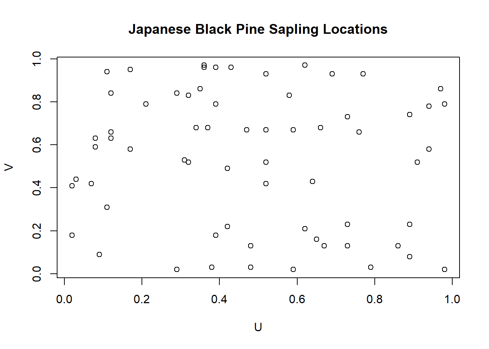
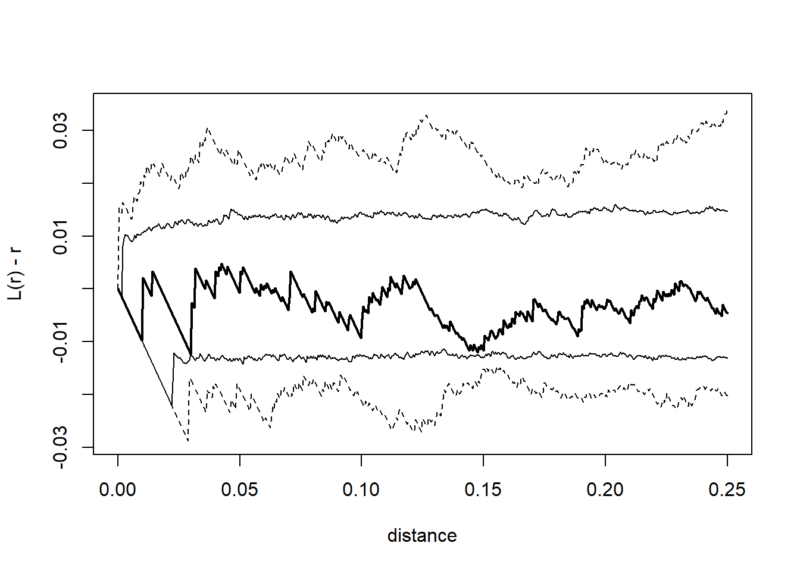
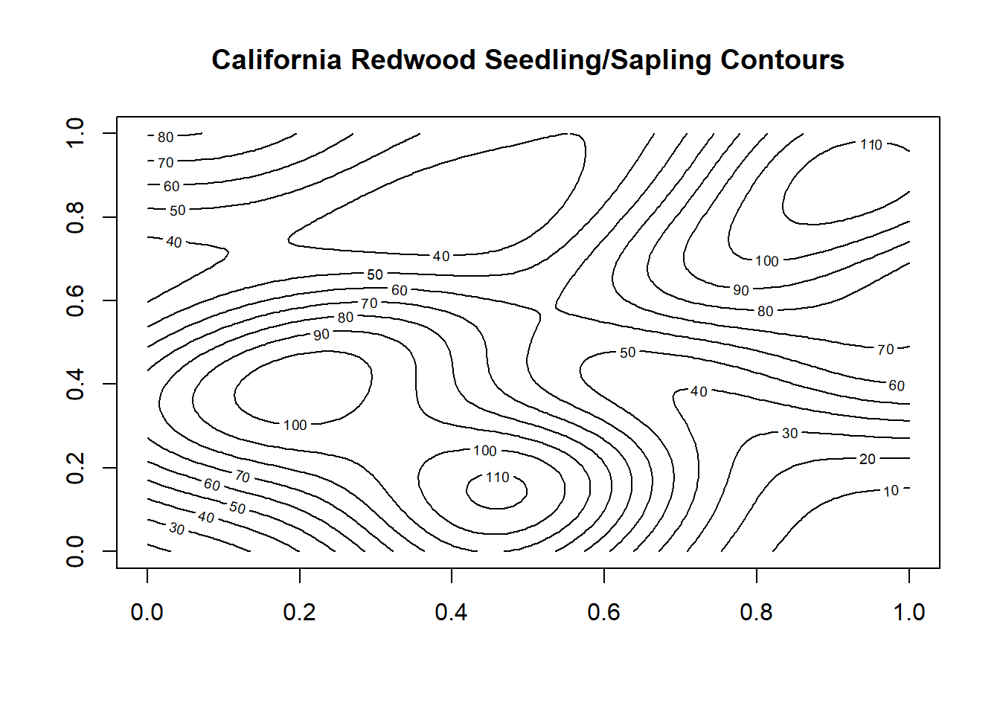
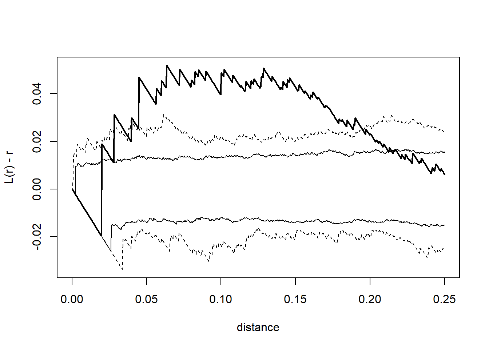

spatstat 3.0-6
For an introduction to spatstat, type 'beginner'
numata_pines <- spatstat.data::japanesepinesplot(numata_pines$x,numata_pines$y,xlab='U',ylab='V',main='Japanese Black Pine Sapling Locations')

lplot <-function(x, nsim =500, level =0.95,correction ="Ripley", test=FALSE, ...) { lobs <- spatstat.explore::Lest(x, correction = correction, ...) win <- x$window lsim <- pbapply::pblapply(1:nsim, FUN =function(i) { xsim <- spatstat.random::rpoispp(lambda = x$n, win = win) spatstat.explore::Lest(xsim, correction = correction, ...) }) r <- lobs$r # get distances obs <- lobs$iso # get estimated l for observed# get estimated l for each simulated data set sim <-sapply(lsim, getElement, "iso")# apply the min function to each row (MARGIN = 1) of sim# gets pointwise minimum for simulated data# at each distance. do same for max, quantiles, median lo <-apply(sim, MARGIN =1, FUN = min, na.rm =TRUE) hi <-apply(sim, MARGIN =1, FUN = max, na.rm =TRUE) alpha <-1- level qlo <-apply(sim, MARGIN =1, FUN = quantile,prob = alpha/2, na.rm =TRUE) qhi <-apply(sim, MARGIN =1, FUN = quantile,prob =1- alpha/2, na.rm =TRUE) med <-apply(sim, MARGIN =1, FUN = median, na.rm =TRUE)# construct empty plot of the right sizeplot(range(r), c(min(c(lo, obs) - r, na.rm =TRUE),max(c(hi, obs) - r, na.rm =TRUE)),type ="n",xlab ="distance", ylab ="L(r) - r")# plot different statistics with different styles/thicknesslines(r, obs - r, lwd =2)lines(r, lo - r, lty =2)lines(r, hi - r, lty =2)lines(r, qlo - r, lty =1)lines(r, qhi - r, lty =1)}
library(pbapply)lplot(x=numata_pines)

Part b.
Based on the plot from part a, the Japanese Pines data appears consistent with CSR across all spatial scales and no indication of regularity or clustering.
The Monte Carlo p-value suggests that the Numata Pines data is consistent with CSR since we fail to reject the null that our observed test statistic and the simulated test statistic come from the same distribution, and since the simulated distribution is consistent with CSR by design.
At first glance, the distribution of seedling/sapling locations does not appear to be consistent with CSR and we see some potential clustering.
Part b.
dim =2bx =sd(redwood$x)*length(redwood$x)^(-1/(dim+4))by =sd(redwood$y)*length(redwood$y)^(-1/(dim+4))ix =density(redwood,sigma =c(bx,by))contour(ix$v,main='California Redwood Seedling/Sapling Contours')

Since the contours show areas of greater or lower intensity relative to the rest of the study area, we would not think the underlying data to be consistent with CSR.
Part c.
lplot(redwood)

Part d.
From the L(r) - r plot above we can see that there is evidence of clustering beyond what we would expect for a point process compatible with CSR for certain spatial scales up to about r=0.22.
From the Monte-Carlo p-value calculated above we reject the null that the observed statistic is from a distribution compatible with CSR.
Part f.
Overall, there appears to be enough evidence to support the conclusion that the Redwood sapling locations are not compatible with CSR and there is more clustering than would be expected from a CSR point process.
Problem 3
set.seed(1)x <-runif(15)h <-seq(-1,2,len =1000)
Part a.
evaluate the Gaussian kernel function (dnorm) at each value of h using the event location as the mean argument and a sd argument of 0.10
kvals <-data.frame()for (i in1:1000){ j =0for (xi in x){ j = j+1 kg =dnorm(xi,mean = h[i], sd=0.10) kvals[i,j] = kg }}str(kvals)
'data.frame': 1000 obs. of 15 variables:
$ V1 : num 6.68e-35 9.76e-35 1.43e-34 2.08e-34 3.03e-34 ...
$ V2 : num 5.22e-41 7.89e-41 1.19e-40 1.79e-40 2.70e-40 ...
$ V3 : num 7.61e-54 1.22e-53 1.95e-53 3.13e-53 5.00e-53 ...
$ V4 : num 3.40e-79 6.04e-79 1.07e-78 1.89e-78 3.34e-78 ...
$ V5 : num 1.75e-31 2.51e-31 3.60e-31 5.16e-31 7.37e-31 ...
$ V6 : num 2.21e-78 3.90e-78 6.89e-78 1.21e-77 2.14e-77 ...
$ V7 : num 3.03e-82 5.43e-82 9.72e-82 1.74e-81 3.11e-81 ...
$ V8 : num 5.08e-60 8.37e-60 1.38e-59 2.26e-59 3.71e-59 ...
$ V9 : num 9.33e-58 1.52e-57 2.48e-57 4.03e-57 6.55e-57 ...
$ V10: num 1.32e-24 1.81e-24 2.49e-24 3.42e-24 4.69e-24 ...
$ V11: num 1.05e-31 1.50e-31 2.15e-31 3.09e-31 4.42e-31 ...
$ V12: num 3.48e-30 4.95e-30 7.04e-30 1.00e-29 1.42e-29 ...
$ V13: num 6.31e-62 1.05e-61 1.73e-61 2.87e-61 4.75e-61 ...
$ V14: num 1.00e-41 1.52e-41 2.30e-41 3.47e-41 5.25e-41 ...
$ V15: num 3.83e-68 6.51e-68 1.11e-67 1.88e-67 3.19e-67 ...